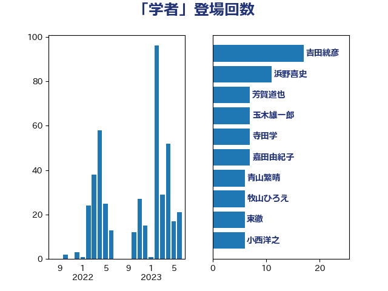

単語「学者」

| 長妻昭 | 立憲民主党 | 19 回 |
| 吉田統彦 | 立憲民主党 | 12 回 |
| 辻元清美 | 立憲民主党 | 11 回 |
| 嘉田由紀子 | 無所属 | 7 回 |
| 大島敦 | 立憲民主党 | 7 回 |
| 松沢成文 | 日本維新の会 | 7 回 |
| 小池晃 | 日本共産党 | 6 回 |
| 西村康稔 | 自由民主党 | 6 回 |
| 青山繁晴 | 自由民主党 | 6 回 |
| 小西洋之 | 立憲民主党 | 5 回 |
| 後藤祐一 | 立憲民主党 | 5 回 |
| 芳賀道也 | 国民民主党 | 5 回 |
| 茂木敏充 | 自由民主党 | 5 回 |
| 一谷勇一郎 | 日本維新の会 | 4 回 |
| 串田誠一 | 日本維新の会 | 4 回 |
| 杉本和巳 | 日本維新の会 | 4 回 |
| 武田良太 | 自由民主党 | 4 回 |
| 田村智子 | 日本共産党 | 4 回 |
| 篠原孝 | 立憲民主党 | 4 回 |
| 大塚耕平 | 国民民主党 | 3 回 |
| 宮本徹 | 日本共産党 | 3 回 |
| 有村治子 | 自由民主党 | 3 回 |
| 杉尾秀哉 | 立憲民主党 | 3 回 |
| 柚木道義 | 立憲民主党 | 3 回 |
| 森山浩行 | 立憲民主党 | 3 回 |
| 浅田均 | 日本維新の会 | 3 回 |
| 谷公一 | 自由民主党 | 3 回 |
| 足立康史 | 日本維新の会 | 3 回 |
| 関芳弘 | 自由民主党 | 3 回 |
| 下村博文 | 自由民主党 | 2 回 |
| 伴野豊 | 立憲民主党 | 2 回 |
| 前川清成 | 日本維新の会 | 2 回 |
| 古川禎久 | 自由民主党 | 2 回 |
| 吉田宣弘 | 公明党 | 2 回 |
| 吉良州司 | 無所属 | 2 回 |
| 大口善徳 | 公明党 | 2 回 |
| 奥野総一郎 | 立憲民主党 | 2 回 |
| 小山展弘 | 立憲民主党 | 2 回 |
| 山谷えり子 | 自由民主党 | 2 回 |
| 平木大作 | 公明党 | 2 回 |
| 梅村みずほ | 日本維新の会 | 2 回 |
| 森まさこ | 自由民主党 | 2 回 |
| 櫻井周 | 立憲民主党 | 2 回 |
| 泉健太 | 立憲民主党 | 2 回 |
| 玉木雄一郎 | 国民民主党 | 2 回 |
| 田島麻衣子 | 立憲民主党 | 2 回 |
| 石井苗子 | 日本維新の会 | 2 回 |
| 竹内譲 | 公明党 | 2 回 |
| 美延映夫 | 日本維新の会 | 2 回 |
| 落合貴之 | 立憲民主党 | 2 回 |
| 遠藤敬 | 日本維新の会 | 2 回 |
| 野上浩太郎 | 自由民主党 | 2 回 |
| 鈴木義弘 | 国民民主党 | 2 回 |
| 青柳仁士 | 日本維新の会 | 2 回 |
| 音喜多駿 | 日本維新の会 | 2 回 |
| 高良鉄美 | 無所属 | 2 回 |
| 三宅伸吾 | 自由民主党 | 1 回 |
| 三木亨 | 自由民主党 | 1 回 |
| 中西祐介 | 自由民主党 | 1 回 |
| 中谷真一 | 自由民主党 | 1 回 |
| 井上信治 | 自由民主党 | 1 回 |
| 井上哲士 | 日本共産党 | 1 回 |
| 井坂信彦 | 立憲民主党 | 1 回 |
| 伊藤岳 | 日本共産党 | 1 回 |
| 加藤勝信 | 自由民主党 | 1 回 |
| 勝部賢志 | 立憲民主党 | 1 回 |
| 古川元久 | 国民民主党 | 1 回 |
| 古賀之士 | 立憲民主党 | 1 回 |
| 古賀友一郎 | 自由民主党 | 1 回 |
| 吉川元 | 立憲民主党 | 1 回 |
| 和田政宗 | 自由民主党 | 1 回 |
| 和田有一朗 | 日本維新の会 | 1 回 |
| 坂本哲志 | 自由民主党 | 1 回 |
| 坂本祐之輔 | 立憲民主党 | 1 回 |
| 塩川鉄也 | 日本共産党 | 1 回 |
| 大塚拓 | 自由民主党 | 1 回 |
| 大西健介 | 立憲民主党 | 1 回 |
| 守島正 | 日本維新の会 | 1 回 |
| 寺田学 | 立憲民主党 | 1 回 |
| 小沼巧 | 立憲民主党 | 1 回 |
| 小熊慎司 | 立憲民主党 | 1 回 |
| 尾崎正直 | 自由民主党 | 1 回 |
| 尾身朝子 | 自由民主党 | 1 回 |
| 山下芳生 | 日本共産党 | 1 回 |
| 山田宏 | 自由民主党 | 1 回 |
| 川田龍平 | 立憲民主党 | 1 回 |
| 工藤彰三 | 自由民主党 | 1 回 |
| 打越さく良 | 立憲民主党 | 1 回 |
| 斉藤鉄夫 | 公明党 | 1 回 |
| 新垣邦男 | 立憲民主党 | 1 回 |
| 末松信介 | 自由民主党 | 1 回 |
| 末松義規 | 立憲民主党 | 1 回 |
| 東徹 | 日本維新の会 | 1 回 |
| 枝野幸男 | 立憲民主党 | 1 回 |
| 柳ヶ瀬裕文 | 日本維新の会 | 1 回 |
| 梅谷守 | 立憲民主党 | 1 回 |
| 沢田良 | 日本維新の会 | 1 回 |
| 浜田聡 | NHK党 | 1 回 |
| 滝波宏文 | 自由民主党 | 1 回 |
| 片山さつき | 自由民主党 | 1 回 |
| 牧山ひろえ | 立憲民主党 | 1 回 |
| 牧義夫 | 立憲民主党 | 1 回 |
| 猪口邦子 | 自由民主党 | 1 回 |
| 玄葉光一郎 | 立憲民主党 | 1 回 |
| 田村憲久 | 自由民主党 | 1 回 |
| 田村貴昭 | 日本共産党 | 1 回 |
| 白石洋一 | 立憲民主党 | 1 回 |
| 石川博崇 | 公明党 | 1 回 |
| 石川昭政 | 自由民主党 | 1 回 |
| 石田昌宏 | 自由民主党 | 1 回 |
| 福山哲郎 | 立憲民主党 | 1 回 |
| 空本誠喜 | 日本維新の会 | 1 回 |
| 笠浩史 | 無所属 | 1 回 |
| 篠原豪 | 立憲民主党 | 1 回 |
| 自見はなこ | 自由民主党 | 1 回 |
| 若松謙維 | 公明党 | 1 回 |
| 菅義偉 | 自由民主党 | 1 回 |
| 菊田真紀子 | 立憲民主党 | 1 回 |
| 萩生田光一 | 自由民主党 | 1 回 |
| 薗浦健太郎 | 自由民主党 | 1 回 |
| 西田昌司 | 自由民主党 | 1 回 |
| 近藤昭一 | 立憲民主党 | 1 回 |
| 金城泰邦 | 公明党 | 1 回 |
| 鎌田さゆり | 立憲民主党 | 1 回 |
| 階猛 | 立憲民主党 | 1 回 |
| 青山大人 | 立憲民主党 | 1 回 |
| 額賀福志郎 | 自由民主党 | 1 回 |
| 馬場成志 | 自由民主党 | 1 回 |
| 高橋はるみ | 自由民主党 | 1 回 |
| 高橋光男 | 公明党 | 1 回 |
| 高橋克法 | 自由民主党 | 1 回 |
| 高階恵美子 | 自由民主党 | 1 回 |
| 麻生太郎 | 自由民主党 | 1 回 |